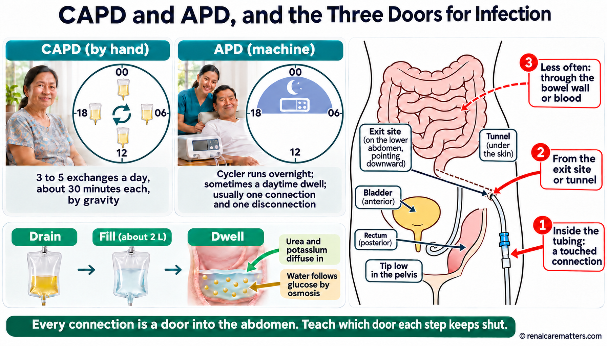
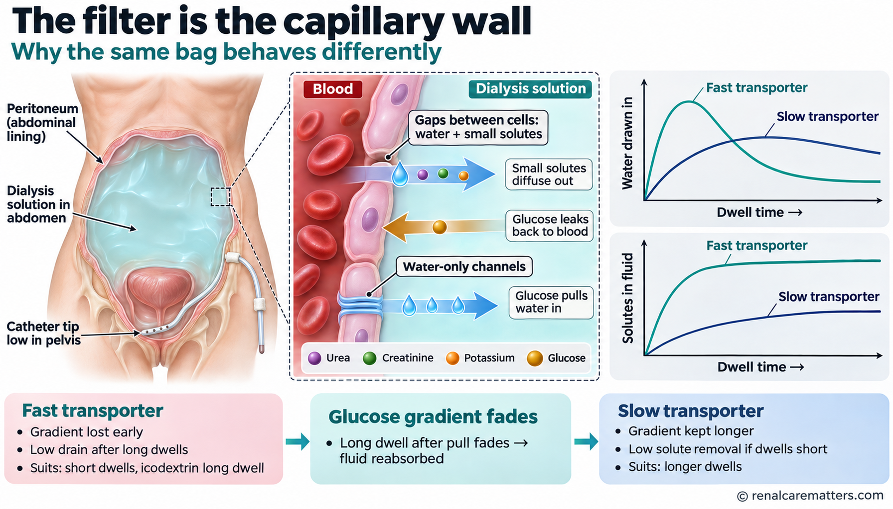
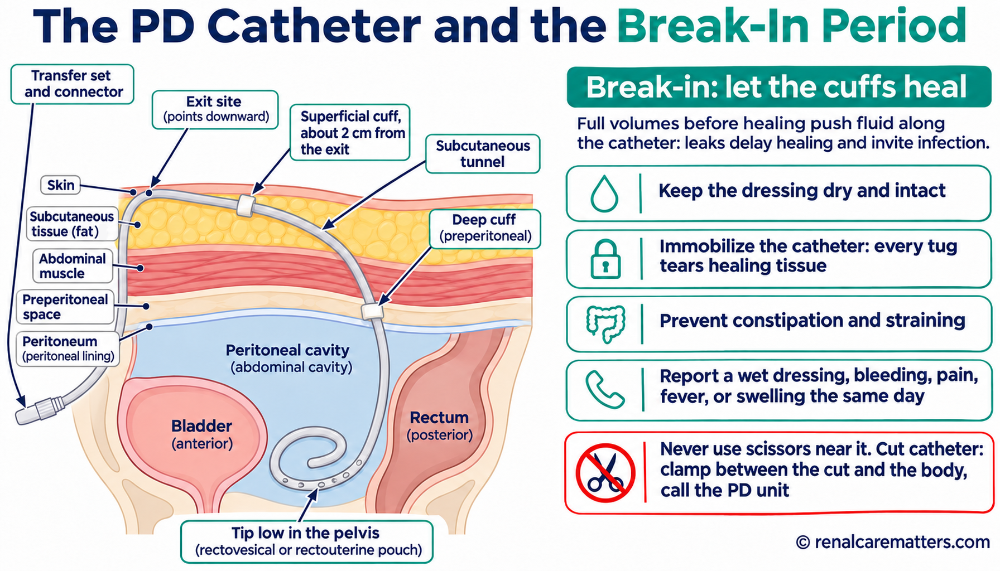
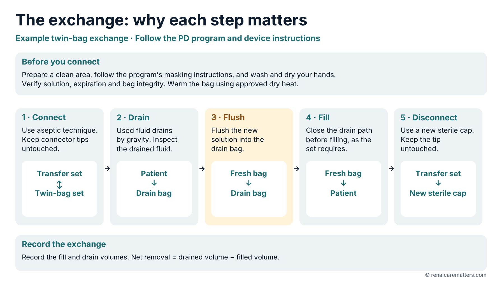
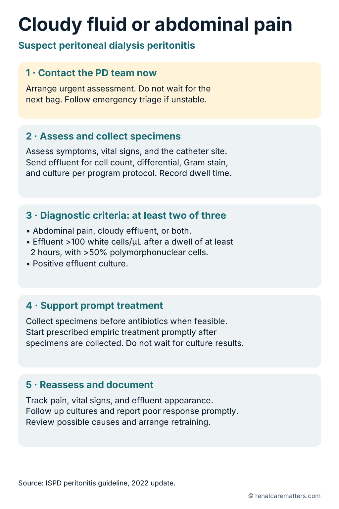
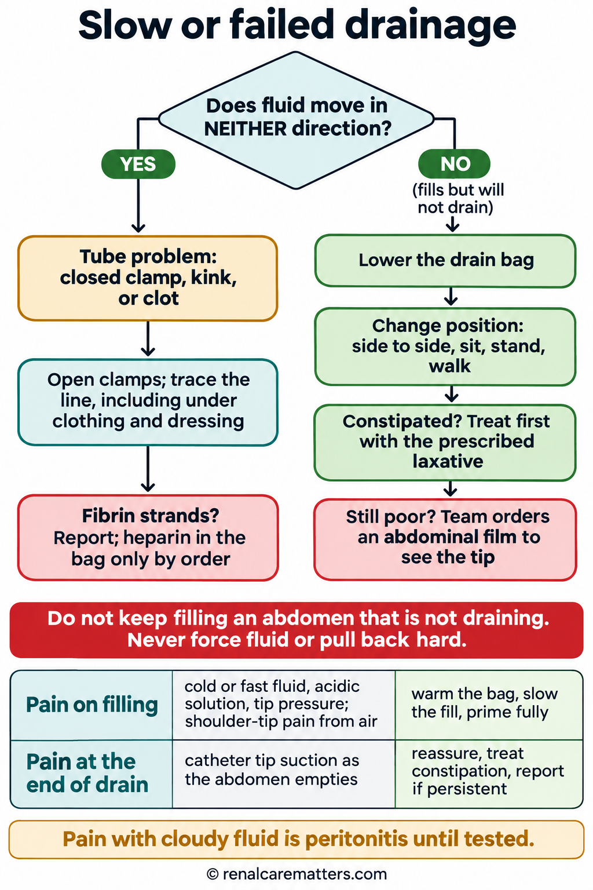
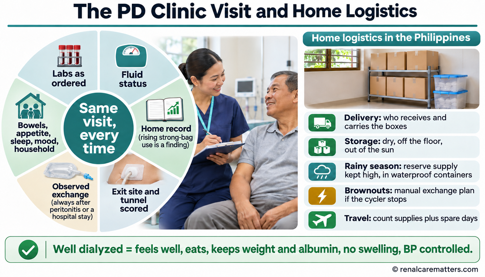
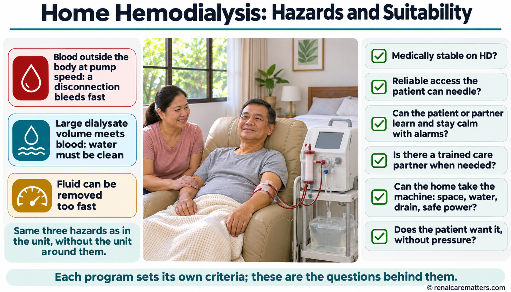
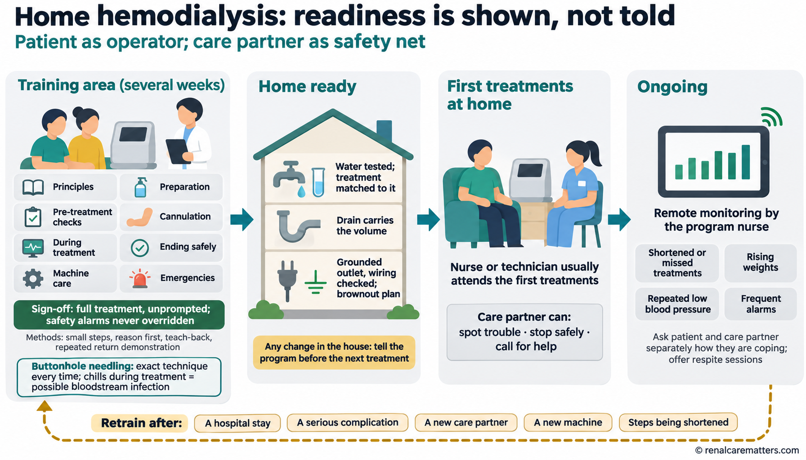
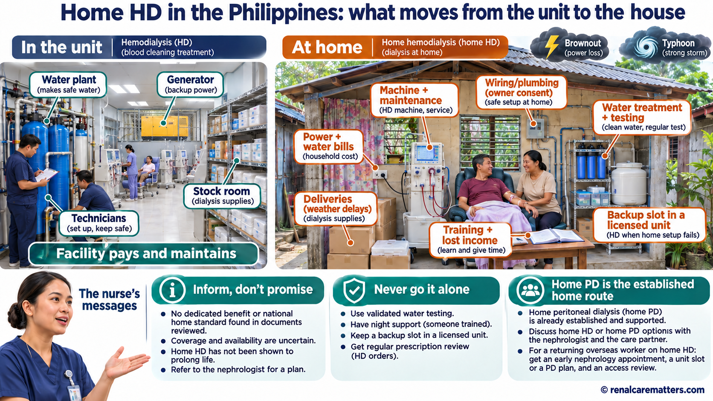

After this module you should be able to
- Explain how peritoneal dialysis removes solutes and water, and define fill, dwell, and drain.
- Compare manual and automated peritoneal dialysis.
- Describe how organisms reach the peritoneum and how exit-site care and connection technique prevent this.
- Recognize peritonitis and state why it needs urgent assessment by the dialysis team.
- Assess home readiness and confirm competence by full return demonstration.
- Relate membrane transport type, glucose strength, and dwell length to the prescription, and explain why remaining kidney function is protected.
- Explain the reasoning behind each principle of a safe exchange, including flush before fill, and how fluid removal is recorded.
- Recognize non-infectious complications and apply a stepwise response to poor drainage.
- Describe specimen collection, treatment principles, and follow-up for exit-site infection and peritonitis, and the care of a peritoneal dialysis patient at home and on a general ward.
- Explain who may be suited to home hemodialysis (HD), how the main machine types and the conventional, short daily, and nocturnal schedules differ, and what the randomized trials do and do not show.
- Describe how a patient and care partner are trained for home HD, including self-cannulation and buttonhole risks, home water and electrical requirements, emergencies at home, and remote monitoring.
- Describe the practical realities of home HD in the Philippines and counsel patients honestly about it alongside home peritoneal dialysis (PD).
The filter is already inside
Picture a sponge soaked in a basin of clean water. Wastes seep out of the sponge into the water. Pour the water away, refill the basin, and the sponge gives up a little more. In peritoneal dialysis (PD) the sponge is the blood in the small vessels of the peritoneum, the thin membrane that lines the abdomen. The basin is the abdomen itself, filled through a soft catheter with dialysis solution.
The picture has a limit. A sponge only gives things up. The peritoneum is a living barrier that moves water and wastes in both directions, and how much it moves depends on the solution, the time, and the patient’s own membrane. The next sections give the real physiology.
PD needs no needles and, in its manual form, no machine. It happens at home, gently and every day. The price of that freedom is that the patient or a family member becomes the operator, several times a day. Most peritonitis traces back to one moment when a sterile connection was touched. Your work is to teach the exchange, to confirm by observation that the operator can do it safely, and to act the same day when the drained fluid turns cloudy.
In PD, the nurse’s main tool is teaching, and the main test of teaching is what the operator does with their own hands.
Exchanges, transport, and types
One exchange has three phases. During drain, the used fluid, called effluent, flows out by gravity. During fill, fresh solution flows in, usually about 2 liters in an adult. During dwell, the solution stays in the abdomen and does its work.
Two processes act during the dwell. Small solutes such as urea and potassium diffuse from the blood in the peritoneal capillaries into the fluid, down their concentration difference. Water follows by osmosis, because the solution contains glucose, or another osmotic agent, at a higher concentration than blood. A stronger glucose solution pulls more water. Over a long dwell, glucose is absorbed and the pull fades. That is why dwell time and solution strength are prescribed together.
| Manual exchanges | Automated exchanges | |
|---|---|---|
| Name | Continuous ambulatory peritoneal dialysis (CAPD) | Automated peritoneal dialysis (APD) |
| How | The patient connects a twin-bag set and exchanges by gravity, typically three to five times a day | A cycler machine performs several exchanges overnight. There may be a daytime dwell |
| Needs | A clean surface, a hook or stand, hand hygiene, and about 30 minutes per exchange | A cycler, reliable electricity, and space at the bedside |
| Connections per day | Several | Usually one connection and one disconnection |
How infection enters. Organisms reach the peritoneum by three main routes. The first is through the inside of the tubing, when a connection is touched. The second is along the outside of the catheter, from an infected exit site or tunnel. The third, less often, is from the bowel. Technique controls the first two. The catheter leaves the skin at the exit site. A healthy exit site is dry, with no redness, swelling, or discharge.
Every connection is a door into the abdomen. Ask, for each step you teach, which door it keeps shut.

The membrane in depth: why the same bag behaves differently in different people
The capillary wall is the real filter. We call the peritoneum the membrane. The barrier that decides what crosses, though, is the wall of the small blood vessels running through it. Picture that wall as a sieve with two kinds of opening. Gaps between the lining cells let water and small solutes pass together: urea, creatinine, potassium, and glucose. Much smaller channels through the cells let only water pass.
The picture has a limit. A sieve has fixed holes. The capillary wall is alive, and the number of vessels in contact with the fluid differs from person to person and changes over the years. Two consequences follow. Small solutes move by diffusion, quickly at first and then more slowly as the fluid comes to resemble blood. Water moves only while the solution is more concentrated than blood. Glucose is itself a small solute, so it leaks back into the blood through the same gaps. The pull on water is strongest in the first hour or two and then fades. If the dwell runs long after the glucose gradient is gone, fluid is reabsorbed and the patient drains less than was filled.
That is why glucose strength and dwell length are prescribed as a pair. Glucose solutions come in three strengths, commonly labeled 1.5%, 2.5%, and 4.25% dextrose. A stronger bag removes more water. It also delivers more glucose to the patient and, over years, to the membrane. The prescriber therefore uses the weakest strength that keeps the patient at target weight.
Transport type. The peritoneal equilibration test measures how fast this particular membrane works. A standard bag dwells for 4 hours. Samples of fluid and blood show how fast creatinine has entered the fluid and how fast glucose has left it. The result places the patient on a scale from fast to slow transport and guides the prescription.1
| Fast transporter | Slow transporter | |
|---|---|---|
| Small solutes | Equilibrate quickly | Equilibrate slowly |
| Glucose gradient | Lost early, so water removal is poor on long dwells | Kept longer, so water removal is sustained |
| Typical problem | Fluid overload, low drain volumes after long dwells | Solute removal that is too low if dwells are short |
| Prescription that suits | Short dwells, often automated overnight therapy; icodextrin for the long dwell | Longer dwells with adequate volume, as in manual daytime exchanges |
Icodextrin. Icodextrin is a large starch-derived molecule. It is absorbed slowly, so it keeps drawing water for many hours. It is used once a day for the long dwell: overnight in CAPD, daytime in APD. Two nursing points matter. First, it is broken down to maltose, and some bedside glucose meters and strips read maltose as glucose. The result is falsely high, and insulin given for it can cause severe hypoglycemia. Test a patient on icodextrin with a glucose-specific method, at home and in hospital, and make sure the chart carries that alert. Second, report a new rash after it is started.
Ultrafiltration failure. Some patients stay overloaded despite strong bags. Ask the practical questions first. Is salt and fluid intake high? Are exchanges being missed? Is there a drainage problem or a leak? Is urine volume falling? Is high blood sugar flattening the gradient? True membrane failure usually follows years of therapy or repeated peritonitis. By the standard definition, it is less than 400 mL of net fluid removal after a 4-hour dwell with the strongest glucose solution. Your contribution is the record that shows the trend: daily weights, bag strengths used, and drain volumes.
Remaining kidney function. Urine from the patient’s own kidneys removes salt, water, and larger waste molecules all day. In PD, keeping it is associated with better survival and easier fluid control.1 The association is observational, and patients who keep their urine may be healthier in other ways. Protecting it is still a daily nursing task, because it costs little. Watch for over-removal of fluid and dehydration, including during diarrhea or vomiting. Question nonsteroidal anti-inflammatory drugs. Make sure anyone prescribing an aminoglycoside antibiotic or ordering a contrast study knows the patient still passes urine. Ask about urine volume at every visit. A fall is a reason to review the prescription, because the dialysis must now do more.
When the record shows less fluid out than in, ask four questions: the bag, the dwell, the drain, and the diet.

The catheter, the break-in period, and an urgent start
The PD catheter is a soft silicone tube in three parts. Inside the abdomen, a segment with many side holes lies low in the pelvis. A middle segment runs in a tunnel under the skin. The external segment ends in a connector and a transfer set. Most catheters carry two felt cuffs. The deep cuff sits in the muscle of the abdominal wall, and the superficial cuff sits under the skin a short distance from the exit site. Over several weeks tissue grows into the cuffs. That anchors the catheter and seals the track, against fluid leaking out and against organisms tracking in. The exit site is planned to point downward or sideways, away from the belt line and skin folds, where the patient can see and reach it.
Break-in. Filling the abdomen raises the pressure inside it. If full volumes are used before tissue has healed around the cuffs, fluid can leak along the catheter. A leak delays healing and invites infection. For a planned start, therapy is usually delayed about two weeks after insertion, and the catheter is flushed on the unit’s schedule meanwhile. When dialysis cannot wait, an urgent start is possible. Small fill volumes are used with the patient lying down, because pressure in the abdomen is lowest in that position. Volumes are increased gradually, and the abdomen is left empty when the patient is up and walking, as the program directs.
Early care after insertion follows the program protocol. The principles do not change:
- Keep the dressing dry and intact. It is usually left undisturbed for the first several days unless it is wet, soiled, or loose, and early dressing changes are done by a trained nurse using sterile technique. No showers or baths until the team allows.
- Immobilize the catheter. Every tug tears the healing tissue at the exit site and is a recognized cause of later exit-site infection. Tape or a securement device anchors the tubing; the patient is taught never to let it hang or catch on clothing.2
- Prevent constipation and straining. A full bowel displaces the catheter tip, and straining, heavy lifting, and forceful coughing raise abdominal pressure and promote leaks and hernias. A bowel regimen is commonly prescribed from the day of insertion.
- Inspect and report. A wet dressing, bleeding, increasing pain, fever, or swelling around the site is reported the same day.
- Never use scissors near the catheter. A cut catheter is an emergency: clamp between the cut and the body and call the PD unit.
Once the site has healed, exit-site care becomes the patient’s own routine. Hand hygiene first. Look and feel along the tunnel. Clean and dry thoroughly. Apply the prescribed topical agent. Secure the catheter.2
A catheter that never moves and a bowel that never strains give the cuffs time to seal. Protect both from the first day.

The exchange: the reason behind each step
Training teaches the steps of the system the patient uses. When you teach or audit technique, you need the reasons as well. A patient who understands why a step exists is less likely to drop it at home in the sixth month.3
| Principle | Reason | What to look for when observing |
|---|---|---|
| Prepare the room | Moving air and animals carry organisms to an open connector | Door and windows closed, fan and air conditioner off or directed away, pets out, surface wiped, everything needed within reach before starting. Contact with household pets during exchanges is a recognized peritonitis risk4 |
| Mask, if the program requires it | Organisms from the nose and mouth | Covers nose and mouth; anyone else in the room is masked or away from the field |
| Hand hygiene | Touch is the main route of peritonitis | Thorough washing and, just as important, thorough drying, or alcohol hand rub, repeated if anything non-clean is touched |
| Check the bag | The wrong strength changes fluid removal; a damaged bag is not sterile | Strength, volume, expiry date, clear fluid, firm squeeze for leaks, intact seals and caps. A doubtful bag is set aside, not used |
| Warm with dry heat | Cold fluid causes pain and shivering | A warming pad or the cycler plate; never immersion in water, which contaminates the ports. Body temperature, not hot |
| Connect, then drain, flush, fill | See below | Connector tips touch nothing; clamps are operated in the correct order |
| Inspect and measure the drain | The drained fluid is the daily test of the peritoneum | Clear enough to read print through the bag; pale yellow; volume by weight |
| Record | Trends guide the prescription | Date, time, bag strength, volume filled, volume drained, appearance, weight, blood pressure |
| Disconnect and dispose | The open transfer set is again at risk | New sterile cap applied without touching the tip; fluid emptied into the toilet; bags and lines discarded as the program advises; hands cleaned |
Why the flush comes before the fill. The moment of connection carries the greatest risk. In a twin-bag system the patient drains first. Then a small amount of fresh solution runs from the new bag straight into the drain bag, before any fluid goes toward the abdomen. Organisms introduced at the connection are carried away to the drain bag by the outgoing effluent and the flush. Only then is the drain line clamped and the abdomen filled. A patient who fills first, or skips the flush to save time, has removed the one design feature that makes the system forgiving.
Fluid removal. Net fluid removal for an exchange is the volume drained minus the volume filled. A positive number means water was removed. A negative number means fluid was absorbed. Units differ in how they count the small overfill in each bag and the flush volume, so the patient uses the method the program taught, every time. Report values that stay negative or keep shrinking, a rising weight, or new swelling.
Automated therapy. For APD the patient sets up the cycler in the evening. The bags are placed, the cassette and lines loaded, the machine primed, and one connection made at bedtime. The same rules about the room, the hands, and the connector tips apply, concentrated into one setup. The alarm that most often wakes patients is a drain alarm, when the machine cannot recover the expected volume. The usual causes are lying on the tubing, a kink or closed clamp, constipation, or the catheter tip resting against the pelvic wall. Teach the patient to check the line, change position, and follow the machine prompts, and to call the unit if alarms recur. Repeatedly bypassing drain alarms can leave the abdomen overfilled. Every APD household also learns manual exchanges and keeps manual supplies, so that treatment continues through a brownout or a machine fault.
When you observe an exchange, watch the hands and the connector tips. Everything else in the room exists to protect those two seconds.

What the guidelines say
The International Society for Peritoneal Dialysis (ISPD) 2022 guideline recommends diagnosing peritonitis when at least two of three findings are present. The first is clinical features: abdominal pain, cloudy effluent, or both. The second is an effluent white cell count above 100 per microliter after a dwell of at least 2 hours, with more than 50% neutrophils. The third is a positive effluent culture.4 The guideline recommends sending effluent for cell count, differential, Gram stain, and culture whenever peritonitis is suspected. It recommends starting empirical antibiotics that cover gram-positive and gram-negative organisms as soon as the specimens are taken, preferably into the peritoneum.4 Speed matters. Peritonitis is a major reason patients leave PD for hemodialysis, and repeated or severe episodes can scar the membrane.
On training, the ISPD advises that qualified, experienced nursing staff deliver PD training from a structured curriculum. It advises reassessing technique periodically and retraining after peritonitis, after a hospital admission, or when a different person takes over the exchanges.4,3 The 2023 catheter-infection recommendations advise cleaning the exit site at least twice a week and after every shower or vigorous exercise, and applying a topical antibiotic as prescribed.2 The 2022 guideline also addresses contamination. After a break in sterile technique the patient contacts the PD unit promptly, and prophylactic antibiotics are advised when fluid has run through a contaminated, open system.4
Know how strong this evidence is. Most of the literature behind these statements is observational, and many training and exit-site practices have never been compared in randomized trials. The guidelines grade each statement. This course does not restate those grades, so read them in the guideline before quoting a statement as strong.
The ISPD prescribing recommendations ask that PD be judged by how the person feels and functions, by fluid status, and by remaining kidney function, and not by a single clearance number.1 A clearance number is a surrogate. It tells you how much urea was removed, not how the patient is living.
Infection in depth: exit site, tunnel, and peritonitis
Exit-site and tunnel infection. The ISPD defines an exit-site infection by purulent discharge at the exit site, with or without redness of the surrounding skin. A tunnel infection is inflammation along the buried track: redness, swelling, tenderness, or hardening over the catheter path, or a fluid collection seen on ultrasound.2 Redness alone can be early infection, a reaction to tape or cleanser, or the result of pulling on the catheter. Describe it and watch it closely. Many units record the exit site with a score that rates five features from 0 to 2: swelling, crust, redness, pain on pressure, and drainage. Purulent drainage counts as infection whatever the total. A score turns “looks a bit red” into something two nurses on different days can compare. When there is discharge, send a swab for culture before antibiotics start. These infections matter because the same organisms, especially Staphylococcus aureus and Pseudomonas, can travel along the catheter and cause peritonitis. An infection that does not clear can cost the patient the catheter.2
Collecting the peritonitis specimen. The first cloudy bag is the best specimen. That is why patients are told to bring it and not to discard it. If the abdomen is empty, as in an APD patient with no daytime dwell, solution is run in and left for at least 2 hours before sampling, so that the cell count can be interpreted. The effluent goes for cell count with differential, Gram stain, and culture. Inoculating fluid directly into blood-culture bottles is the preferred culture method, because it improves the chance of growing the organism.4 Label the specimen with the dwell time. Collect it before the first antibiotic dose. Do not let the wait for a result delay treatment. The Gram stain is often negative in peritonitis. Its main value is early detection of yeast.
Treatment principles. Antibiotics are preferably given into the peritoneal cavity, mixed into the dialysis bag with sterile technique, because this puts high concentrations where the infection is.4 When a dose is given once daily, the bag carrying it must dwell long enough for the drug to be absorbed. The minimum dwell is in the unit protocol. Make sure the patient understands that this bag is not drained early. Drug choice and dose belong to the prescriber and are adjusted when the culture returns. The ISPD also recommends antifungal prophylaxis whenever a PD patient receives a course of antibiotics for any reason, because antibiotics clear the way for fungal peritonitis.4 Pain is treated, constipation is prevented, and fibrin in cloudy fluid may call for heparin in the bag, if ordered.
Expected course and follow-up. Pain and cloudiness should begin to improve within about two to three days. Track symptoms and bag clarity daily. Repeat effluent cell counts confirm the fall. Three situations change the goal from saving the catheter to saving the peritoneum:
- Refractory peritonitis: the effluent has not cleared after 5 days of appropriate antibiotics.
- Relapsing peritonitis: a new episode within 4 weeks of finishing treatment, with the same organism or with no growth.
- Fungal peritonitis.
In these situations the guideline recommends removing the catheter, with temporary hemodialysis, because persisting with antibiotics risks permanent membrane damage and death.4 Patients often feel this as failure. You can frame it accurately: it protects the patient and, in many cases, the chance of returning to PD later.
Every episode is investigated. After each peritonitis the team reviews the likely cause. Was it touch contamination, an exit-site or tunnel infection, a bowel source, a recent procedure, or a change in who performs exchanges? Technique is observed again, with retraining as needed.4 Keep the tone fact-finding, not blaming. Patients who fear a scolding report late.
Unit standards. A PD program counts its infections. The ISPD 2022 targets are an overall peritonitis rate of no more than 0.40 episodes per patient-year at risk, and culture-negative peritonitis in fewer than 15% of episodes.4 A high culture-negative proportion points to a specimen problem: collection after antibiotics, too small a volume, or delayed transport. The unit corrects it with the laboratory.
Prevention around procedures. Colonoscopy and invasive gynecologic procedures can seed the peritoneum. The guideline suggests antibiotic prophylaxis beforehand and an empty abdomen during the procedure.4 Your task is communication. Teach the patient to tell the PD unit about any planned procedure. Ward and endoscopy nurses check that a plan exists. Low potassium is also associated with peritonitis, and the guideline advises avoiding and treating it.4
Specimen first, antibiotic next, cause afterward. Each step is the nurse’s to make happen, and none waits for the one before it to be perfect.

Teach, observe, respond
Assess the home before training ends. Ask, and see where you can. Where will the exchanges be done? Is there a table that can be wiped clean, a place to wash and dry hands, and a door or window that closes against drafts and pets? Where will a month of boxed supplies be stored, off the floor and away from heat? How reliable are the water and electricity? Who else lives there? In the Philippines, also ask about the plan for typhoons and floods, the travel time to the PD unit, and how supplies are delivered.
Teach in small steps and confirm by return demonstration. Readiness does not mean the learner has been told, or says they understand. It means the patient or caregiver performs a complete exchange, from hand hygiene to disposal, unprompted and without a break in technique, on more than one occasion. It also means they can say what they would do if something goes wrong: a touched connector, a hole in the bag or tubing, fluid that will not drain, cloudy effluent, fever, abdominal pain, or a red or discharging exit site. If a family member will do the exchanges at home, that person is the one who demonstrates.
Respond to cloudy effluent the same day. A patient who reports cloudy fluid, with or without pain or fever, is told to come to the PD unit or emergency department today and to bring the cloudy bag. Do not advise waiting to see whether the next bag clears. Notify the PD team. Obtain the effluent specimens that are ordered. Look at the exit site and along the tunnel. Ask about recent contamination, constipation or diarrhea, and recent procedures. The antibiotics are prescribed. Your contribution is speed, a correctly collected specimen, and a fresh look at technique afterward.
For a contamination event, the first instruction is the same in every unit: stop, clamp, do not continue the exchange, and call the PD unit. What follows depends on whether fluid has already flowed through the contaminated connection. The PD team decides.
Cloudy fluid is peritonitis until tested. The bag comes with the patient, and the patient comes today.
Continue with the Peritoneal Dialysis Nurse track
This module introduces peritoneal dialysis (PD). Nurses who will work in a PD program can continue with the Peritoneal Dialysis Nurse specialty track: twelve modules over six weeks on PD physiology, home readiness, the catheter and exit site, continuous ambulatory and automated PD, goal-directed monitoring, peritonitis, urgent problems, patient teaching, transitions, special populations, and Philippine practice and quality, with skills stations and a preceptor guide.
Non-infectious complications: mechanical and metabolic
Slow or failed drainage is the most common call a PD nurse receives. First ask whether fluid moves in neither direction, or only fails to come out. Fluid that will neither fill nor drain suggests a blockage of the tube itself: a closed clamp, a kink, or a clot or fibrin plug. Fluid that fills normally but drains poorly suggests something covering the side holes, or a tip that has moved out of the pelvis: a loaded bowel, catheter migration, or omentum wrapped around the catheter. Work from the simplest cause upward:
- Check that all clamps are open and trace the line for kinks, including under clothing and the dressing; lower the drain bag.
- Change position: side to side, sitting, standing, walking.
- Ask about bowel movements. Constipation is the most frequent cause and is treated first, with the laxative prescribed for the patient.
- Look at the fluid for white strands of fibrin and report them; heparin added to the bag is by order.
- If drainage is still poor, the team arranges an abdominal film to see where the tip lies, and repositioning or surgery is considered only after these steps.
The patient does not keep filling an abdomen that is not draining. No one forces fluid through the catheter or pulls back hard on it.
| Problem | How it presents and why | Nursing response |
|---|---|---|
| Pain on filling | Cold or fast-flowing fluid, the acidity of standard solutions, or a catheter tip pressing on tissue; air under the diaphragm causes shoulder-tip pain | Warm the bag, slow the fill, prime lines fully; persistent pain is reported, and pain with cloudy fluid is peritonitis until tested |
| Pain at the end of draining | Suction of the catheter tip against the pelvic lining as the abdomen empties; common in the first weeks | Reassure, treat constipation, report; the prescriber may leave a small volume behind in automated therapy |
| Leak around the catheter | Clear fluid wetting the dressing, usually early or after straining | Report the same day; a glucose test strip on the fluid reads high because dialysis solution is rich in glucose. Therapy is usually rested or volumes reduced |
| Leak into tissues | Swelling of the scrotum or labia, or a soft, thickened abdominal wall, with weight gain and low drain volumes that can be mistaken for poor fluid removal | Report; imaging locates the defect; many need surgical repair |
| Leak into the chest | Fluid passes through a defect in the diaphragm: breathlessness, worse lying down, low drain volumes, and a pleural effusion on one side, usually the right | Urgent report; drain the abdomen and keep the patient upright while awaiting orders |
| Hernia | A lump at the navel, groin, or an old scar, more obvious when standing or full | Report for surgical review. A hernia that becomes painful, hard, and cannot be pushed back, especially with vomiting, is an emergency |
| Blood-tinged fluid | Pink or red fluid around menstruation or ovulation, after strenuous activity or minor trauma, or soon after catheter insertion; a little blood colors a whole bag | Usually benign and clears within a few exchanges, but always reported. Heavy or persistent bleeding, pain, or dizziness needs urgent assessment |
Metabolic effects. Much of the glucose in each bag is absorbed, more from stronger bags and in fast transporters. The results are higher blood sugar and greater insulin needs in diabetes, weight gain as fat, raised triglycerides, and an early feeling of fullness that blunts appetite. Your best response is to keep the patient off strong bags in the first place, by reinforcing salt restriction, and to make sure glucose testing uses a compatible meter. Low potassium is common in PD. Potassium-free solution removes it every day, and intake may be poor. It causes weakness and cramps and slows the bowel, so the diet is often liberal in potassium, and supplements may be prescribed. Protein is lost into every drained bag, and losses rise sharply during peritonitis. The recommended intake for a stable person on PD is 1.0 to 1.2 g of protein per kilogram of body weight per day.5 Many patients do not reach it without specific advice on fish, egg, chicken, and other affordable protein foods. Investigate a falling albumin. Do not just record it.
Encapsulating peritoneal sclerosis is a rare, serious, late complication. The peritoneum thickens and wraps loops of bowel in a fibrous cocoon. It appears mainly after many years of PD, sometimes only after PD has stopped. The clues are recurrent abdominal pain, vomiting and other signs of bowel obstruction, weight loss, loss of fluid removal, and blood-stained effluent. Refer a long-term patient with these symptoms promptly to the nephrologist.
For poor drainage, check the simple things in order before anyone reaches for an X-ray: clamps, position, bowel, fibrin.

Follow-up, home logistics, and the patient on a general ward
The clinic visit. Follow the same structure every time, so that nothing is missed:
- Fluid status: weight against target, blood pressure sitting and standing, ankle and facial swelling, breathlessness, urine volume.
- The home record: bag strengths used, drain volumes, fluid removal trend, missed exchanges. Increasing use of strong bags is a finding in itself.
- The catheter: exit site and tunnel inspected and scored, catheter secured, transfer set change date.
- Technique: a periodic observed exchange, and always after peritonitis, hospitalization, or a change of operator.3
- Bowel habit, appetite, sleep, mood, and how the household is coping.
- Laboratory results: potassium, albumin, glucose, hemoglobin, phosphate, and periodic measures of clearance and urine output as the prescriber orders.
Judge adequacy from the whole picture. A patient who feels well, eats, keeps weight and albumin, has no swelling, and has controlled blood pressure is being well dialyzed. A patient who is nauseated, itchy, losing weight, or overloaded is not, whatever the clearance figure says. The ISPD recommends setting the prescription through shared decisions around the person’s own goals. A smaller starting prescription is acceptable when remaining kidney function is good, with increases as it declines.1
Home logistics in the Philippines.
- Delivery and storage. A month of solution is heavy and bulky. Confirm the delivery schedule and who will receive and carry the boxes. Boxes are stored indoors, off the floor, away from sun, stoves, and damp walls, in their outer packaging, with the oldest stock used first. Patients on islands or in upland barangays need a larger buffer because deliveries are delayed by weather and transport.
- Typhoons, floods, and brownouts. Before the rainy season, review the plan: a reserve supply as advised by the program, kept high and in waterproof containers; hand rub, masks, caps, and a flashlight packed together; manual supplies and the skill to use them for every APD patient; the PD unit number written down, not only stored in a phone; and what to do in an evacuation center, where a screened corner, a wiped surface, and clean hands still make a safe exchange. Patients are told that a delayed or skipped exchange is less dangerous than a contaminated one, and that they should contact the unit as soon as they can.
- Travel. Supplies are counted for the trip plus spare days, exchanges are planned around stops with a clean, closed space, and the unit provides a letter and a contact at the destination where possible.
- Bathing and swimming. Advice follows the program. In general, showers are allowed once the exit site has healed, with exit-site care immediately afterward; soaking in a tub and bathing in rivers, lakes, floodwater, or public hot springs are avoided; the sea or a well-maintained pool may be permitted with a protective covering.
The PD patient admitted to a general ward. Admission is a high-risk time, because exchanges may fall to staff who have never done one.
- Notify the dialysis team on admission, whatever the reason for admission, and confirm the prescription, the supplies, and who will perform exchanges. A patient or caregiver who is well enough may continue under hospital policy. A nurse who has not been trained and assessed does not improvise.
- Do not use the catheter for anything else, and do not let exchanges lapse without a plan from the nephrologist.
- Think of peritonitis in any PD patient with abdominal pain, fever, or unexplained deterioration: look at the drained fluid.
- Medication cautions: icodextrin and glucose meters; no phosphate enemas or magnesium-containing laxatives (Module 3); care with nonsteroidal anti-inflammatory drugs, aminoglycosides, and contrast in a patient who still passes urine; antibiotics for any reason prompt the question of antifungal prophylaxis; planned bowel or gynecologic procedures are discussed with the PD team first.
- Keep the record going: weights, bag strengths, drain volumes, and appearance, in the format the PD unit uses.
Burnout. PD has no days off. After months or years, patients and especially caregivers tire. Steps are shortened, exchanges are skipped, records become implausibly regular, and peritonitis follows. Ask directly, and separately, how the patient and the caregiver are managing. A caregiver often will not admit strain in front of the patient. The team can offer options: a simpler prescription where clinically acceptable, training a second family member, assisted PD with a trained helper, a change between manual and automated therapy, or a planned transfer to hemodialysis. A planned transfer, discussed early with access prepared, is a treatment decision. An unplanned transfer through severe peritonitis and an emergency catheter is the outcome that honest conversation prevents.
At every visit, ask who is doing the exchanges now, and how tired they are. The answer changes more than any laboratory value.

Home hemodialysis: who, which machine, which schedule, and what is known
Peritoneal dialysis (PD) is the home therapy most nurses meet first. Home hemodialysis (HD) is a different undertaking. PD has no blood circuit and needs no treated water. Home HD takes the whole blood circuit, the needles, the water, and the alarms out of the unit and into a living room.
Every HD session carries three hazards, whatever the building. Blood runs outside the body at pump speed, so a disconnection can bleed fast. A large volume of dialysate meets the blood across a thin membrane, so the water must be clean. Fluid can be pulled from the blood faster than the tissues refill it, so blood pressure (BP) can fall. In a unit, the building and the staff contain those hazards. At home, a trained patient and care partner, a prepared house, and a program that answers the telephone at 2 a.m. must contain them instead.
Who may be suited. There is no single checklist, and each program sets its own criteria. The assessment asks the same broad questions:
- Is the patient medically stable on HD? Sessions that repeatedly end in low BP, unstable heart rhythm, or frequent access problems are worked out in the unit first.
- Is there a reliable access? A well-functioning arteriovenous fistula that the patient can needle is the usual foundation. Some programs train patients with a central venous catheter, which removes needling but adds the risk of catheter infection and disconnection.
- Can the patient (or care partner) learn and perform the tasks? Eyesight, hand strength and dexterity, memory, reading, and the ability to stay calm with an alarm are all assessed, not assumed.
- Is there support? Many programs require a trained care partner in the house during treatment, especially overnight. Others accept solo dialysis for selected patients, or use a paid trained helper (assisted home dialysis).
- Can the home be adapted? Space for the machine and supplies, a suitable water source, a drain, safe electrical supply, permission to modify the house if it is rented, and access for deliveries and technicians.
- Does the patient want it? Pressure from family or staff is not a substitute for the patient’s own motivation.
Being poor, older, disabled, or living alone is not on its own a reason to say no. No household is told it is suitable before a proper home assessment.
Machine types, in general terms. Home HD machines differ mostly in how they obtain dialysate. That difference drives everything else about the home.
| Type | How dialysate is made | What the home must provide |
|---|---|---|
| Conventional-design machine | Mixed from concentrates and treated water, at dialysate flows similar to the unit | A water-treatment system (filters, softening, carbon, and reverse osmosis) plumbed into the house, a drain, and substantial electrical capacity |
| Low-dialysate-volume machine with a compact water unit | Made in batches or on demand by a small purification unit that connects to an ordinary tap | A tap, a drain, and a standard grounded outlet; little or no permanent plumbing |
| Machine using prepared dialysate | Supplied ready-made in bags | No water treatment at home, but storage for large volumes of fluid and reliable deliveries |
Low-dialysate-volume machines use far less fluid, so each hour is less efficient. They are usually run more often or for longer. The water standard does not relax with the smaller volume. Whatever touches the blood across the membrane must still meet dialysis quality.
Schedules. At home the prescription is no longer bound to three fixed unit shifts. The hours below are typical ranges only. The nephrologist sets the prescription for each patient.
| Schedule | Typical pattern | What changes physiologically | What it costs the patient |
|---|---|---|---|
| Conventional | Three sessions a week of about 4 hours | The same as in the unit, including the long gap over the weekend | Fewest setups and needlings |
| Short daily | Five or six sessions a week of about 2 to 3 hours | Smaller fluid gains between sessions, so less fluid has to be removed each time and removal is gentler; no long gap | A setup, needling, and cleanup nearly every day |
| Nocturnal | Long sessions overnight while the patient sleeps, three to six nights a week | Slow fluid removal over many hours; much more phosphate removed, because phosphate leaves the blood slowly and removal depends heavily on time | Sleep beside a running machine; a care partner who may be woken; needle security becomes critical |
What the trials show. The physiology predicts that more frequent or longer sessions should be better, and some measures do improve. The randomized evidence on outcomes patients feel is more modest. When you counsel a patient, know it accurately.
- The Frequent Hemodialysis Network Daily Trial randomized 245 patients to HD six times a week or three times a week for 12 months, in center. Frequent HD improved both main composite outcomes. For death or an increase in left ventricular mass (a measure of heart-muscle thickening), the hazard ratio was 0.61 (95% confidence interval 0.46 to 0.82). For death or a fall in a physical-health score, it was 0.70 (0.53 to 0.92). BP and phosphate control improved. Patients on frequent HD needed more procedures on their vascular access, hazard ratio 1.71 (1.08 to 2.73).6 Read these composites carefully. Left ventricular mass is a surrogate, an image measurement, not an event a patient feels. The physical-health score is the patient’s own report. Both composites rest largely on these two measures, not on deaths. The trial also tested frequency, not the home.
- The Frequent Hemodialysis Network Nocturnal Trial is the randomized test of home delivery. It randomized 87 patients to nocturnal home HD six nights a week or conventional HD three times a week. It found no significant effect on either composite outcome (hazard ratios 0.68 and 0.91). Phosphate and BP control improved, and there was a trend toward more access events.7 The trial was small. This is a failure to show benefit, not proof that there is none.
- Extended follow-up of the nocturnal trial was an observational study after the trial ended, with a median follow-up of 3.7 years. It found higher mortality among those originally randomized to nocturnal HD: hazard ratio 3.88 (1.27 to 11.79). The authors advised caution. Deaths were few, the comparison group had an unusually low death rate, and many patients changed their prescription after the trial.8
Registry studies in which home HD patients live longer than unit patients are explained in large part by selection. Those offered home therapy, who complete training and stay on it, tend to be younger, healthier, and better supported. A fair summary for a patient has four parts. Intensified home HD is associated with better phosphate and BP control and fewer tablets. It has not been shown to prolong life. It uses the access harder. Its strongest benefits are ones patients value directly: control over the schedule, fewer journeys, and treatment fitted around work, school, and family.
Tell patients what home HD has been shown to do, and what it has not. Better numbers and more freedom are real. Longer life has not been demonstrated.

Training a patient and care partner for home hemodialysis
Home HD training is longer and more technical than PD training. It rests on the same principle you met earlier in this module: readiness is shown, not told. The patient becomes the operator and performs the whole treatment. Where the program requires a care partner, that person must recognize trouble, stop the treatment safely, and call for help. In many programs the care partner must also be able to run the treatment if the patient cannot. Training usually takes several weeks in a dedicated area before any treatment happens at home.
| Area of the curriculum | What the trainee learns to do | What the trainer looks for before sign-off |
|---|---|---|
| Principles | Explain how the blood circuit, dialysate, and fluid removal work, and why each safety step exists | Reasoning that would cover a situation the manual did not |
| Preparation | Check water and dialysate as their system requires, set up and prime the machine, enter the prescription exactly as written | Correct order of steps, without prompting, and refusal to start when a check fails |
| Pre-treatment assessment | Weigh, take BP and pulse, check temperature, inspect and feel the access, decide the fluid goal within the prescribed limits | Recognition of findings that mean “call before starting”: fever, a red or painful access, a weak thrill, unusual breathlessness or weight gain |
| Cannulation | Hand hygiene, skin preparation, needle insertion and taping by the method the program teaches | Consistent aseptic technique, secure taping, and lines that cannot be pulled out |
| During treatment | Monitor BP and symptoms, respond to alarms, recognize low BP and cramps early | Correct response to each alarm without overriding a safety alarm |
| Ending | Return blood, remove needles, achieve hemostasis, dispose of sharps and waste | Bleeding controlled, sharps in a rigid container, no blood exposure to others in the house |
| Machine care | Disinfection cycles, routine checks, filter changes, and logs as the manufacturer and program specify | Logs complete and plausible; knows who to call for faults |
| Emergencies | Respond to the situations in the table below | Correct actions in simulated drills, including with the care partner |
Teach the way you teach PD: small steps, the reason before the task, teach-back, and repeated full return demonstrations. Plan retraining after a hospital admission, a serious complication, a change of care partner, a new machine, or any sign that steps are being shortened. A nurse or technician usually attends the first treatments at home.
Self-cannulation. For most trainees, putting a needle into their own arm is the hardest step. Fear is normal. It is not a sign of unsuitability. Trainees usually begin with one needle while the nurse places the other, and progress at their own pace. Two methods are taught:
- Rope-ladder: sites are rotated along the whole length of the fistula, so that no area is punctured repeatedly. This spreads wear and is the general default.
- Buttonhole: the needle enters the same spot, at the same angle, every time. Once a tunnel track has formed, a blunt needle is used. Patients often find it easier and less painful to self-cannulate this way.
The buttonhole infection risk. The buttonhole track is a direct path from the skin into the bloodstream, and the scab over it can harbor bacteria. A home HD cohort study with a systematic review found buttonhole cannulation associated with more access infection than rope-ladder, without fewer surgical procedures on the fistula.9 That is observational evidence, and units using buttonholes may differ in other ways. A second systematic review found that the evidence does not support preferring buttonhole over rope-ladder, in the unit or at home. It noted that buttonhole may suit some patients whose fistulas are hard to needle.10 Where a program uses buttonholes, the technique must be exact every time: hand hygiene, skin cleaning, scab removal with a sterile device without digging, cleaning again, and a new sterile needle. Teach patients to report redness, swelling, pus, or pain at a site, and fever or chills during or after treatment, the same day. Treat chills during a session in a buttonhole patient as a possible bloodstream infection until assessed.
Water and electricity at home. You do not certify a home. You do need to know what must be in place, so that you recognize when something has changed.
- Water. The feed water is tested before the machine is chosen and installed, because local water varies in chlorine and chloramine, hardness, dissolved solids, and bacteria. The treatment system is matched to that water and to the machine. Testing for chemical and microbial quality continues on the schedule the program and manufacturer set, and some systems require a chlorine or chloramine check before every treatment. Drinking water that tastes clean, including water from a refilling station, is not automatically suitable for dialysis.
- Drainage. Used dialysate and the waste water from purification need a drain that can carry the volume without backing up.
- Electricity. The correct voltage, a grounded outlet with adequate capacity and protection, and wiring checked by a qualified electrician; extension cords and shared overloaded circuits are avoided unless the manufacturer allows them. Every household plans for a brownout in mid-treatment.
- A change in the house (a new water source, renovation, flooding, a move) is reported to the program before the next treatment, because the home assessment no longer applies.
Emergencies at home. The specific steps come from the program and the manufacturer, and patients practice them in drills. The principles are fixed:
| Event | First actions taught | Then |
|---|---|---|
| Needle dislodgement or bleeding from a needle site | Stop the blood pump, clamp the lines, press firmly on the site | Call the program; call an ambulance for heavy bleeding or faintness. Taping that leaves the needle sites visible, and moisture sensors where the program uses them, reduce the risk at night |
| Low BP: dizziness, yawning, nausea, cramps | Stop fluid removal, lie flat with legs raised, give fluid only as the program’s written instructions direct | Recheck BP; call if it does not recover or symptoms persist; record the event for prescription review |
| Air or blood-leak alarm | Never override; follow the machine prompts and stop if the cause is not clear | Call the program; do not restart a treatment the program has not cleared |
| Chest pain, severe breathlessness, collapse | Stop treatment as trained and call an ambulance | The care partner starts basic life support if trained and needed |
| Fever or chills during treatment | Stop treatment as trained | Call the program the same day; possible access or bloodstream infection, or a water problem |
| Power failure | Return blood manually or disconnect as trained for that machine | Report the incomplete treatment; the program arranges a backup session |
Remote monitoring. Many programs receive treatment data from the home, sent by the machine or entered by the patient: weights, BP readings, fluid removed, treatment time, and alarms. A home program nurse reviews them against agreed triggers, such as shortened or missed treatments, rising weights, repeated low BP, or frequent alarms, and contacts the patient early. Monitoring supports care. It does not replace a response team, clinic visits, or laboratory tests. Health data sent from a home is personal information, and its collection, storage, and access must follow the Philippine Data Privacy Act.11 As in PD, shortened sessions and implausibly perfect records are signs of fatigue. Ask the patient and care partner separately how they are coping, and offer respite sessions in the unit.
At home, the patient is the operator and you are the safety net. Make sure every person in the house knows how to stop the blood pump and press on a bleeding site.

Home hemodialysis in the Philippines: what is real today
Patients hear about home HD online, from relatives abroad, or from people selling machines. You are often the first person they ask.
Home PD and home HD are not in the same position. Home PD is an established service with a defined national benefit route, as this module described earlier. For home HD, this site’s review of published national insurer and regulatory documents did not locate a dedicated home HD benefit package or a published national licensing standard for treatment in a private home. (See the assigned reading on home hemodialysis in the Philippines.) The national insurer’s outpatient HD benefit is written around treatments in licensed dialysis centers. No public national count of patients on home HD was located. These are statements about what was found in published documents. They are not proof that nothing exists. Confirm the current rules with the Philippine Health Insurance Corporation, the Department of Health, and the nephrologist before any decision.
What a household would have to carry. In a unit, the facility pays for and maintains the water plant, the generator, the technicians, and the stock room. At home those become separate costs. Unless a program or insurer covers them, they fall on the family:
- the machine, by purchase or lease, and its maintenance and spare parts;
- water treatment equipment, its filters and membranes, and scheduled water testing;
- electrical and plumbing work in the house, which in a rented home needs the owner’s written consent;
- electricity and water used by frequent or overnight treatment;
- consumables delivered to the home, which across an archipelago may be delayed by weather and transport;
- training time for the patient and care partner, and income lost during it;
- a guaranteed backup session in a licensed unit when the machine, water, or power fails.
Household realities. Many Filipino homes are crowded, rented, or informal. They cannot easily give up a room, a drain, or a grounded circuit. Brownouts, typhoons, and floods interrupt water, power, and deliveries, sometimes for days. Care partners usually also work, or care for children and elders. None of this makes home HD impossible. It means a safe service has to be built around the household, not simply installed in it.
Your part, today.
- Give accurate information without promising. Explain what home HD involves, that it has not been shown to prolong life, and that in the Philippines its availability and coverage are uncertain. Refer the question to the nephrologist.
- Warn against going it alone. A patient who buys a machine privately and dialyzes without a program has no validated water testing, no trained support at night, no backup slot, and no one reviewing the prescription. That is unsafe, and the patient should hear it plainly and kindly.
- Keep home PD in the conversation. For a patient who wants treatment at home, home PD is the established route, and many of the reasons patients want home HD (fewer journeys, control over time) apply to PD as well.
- Plan for patients arriving on home HD from abroad. A returning overseas worker or migrant on home HD needs an early nephrology appointment, a unit slot or a PD plan, and a review of the access before the supplies brought from abroad run out.
- Contribute to safe development. In any home HD pilot, nurses bring training curricula, competency sign-off, home assessment, emergency drills, and honest recording of every adverse event and every patient who did not enter or stay.
A machine is not a program. Home HD is safe only when tested water, trained people, a night-time response, and a backup chair come with it.

Case: Ready to go home?
Mr. Alfredo Santiago, 64, started CAPD two weeks ago. His wife, Aling Nena, will do his exchanges because his eyesight is poor. During training Mr. Alfredo answered every question correctly. The couple want to go home to their province, six hours away. Aling Nena has watched four exchanges but has performed only part of one.
Three weeks after discharge, at nine in the evening, she telephones you. Tonight’s drain bag looks “like rice-washing water,” and he has mild abdominal pain.
Before reading on, decide what you would assess, what you would communicate and to whom, what you would teach, and what would make you escalate. Then compare with the outline below.
Assess
Communicate
Teach
Escalate
Check your understanding
Each visit draws 5 questions at random from this module’s 18-question bank, in a shuffled order. Choose the single best answer for each, then select Check answers; a rationale appears under every option. Reload the page or select New set of questions for a different mix. Nothing you select is sent anywhere; scoring happens in your browser.
What this module builds
Each competency names an observable ability, the level this module aims for, and how that level is confirmed. Levels follow Miller’s pyramid. Self-study reaches knows; the higher levels are reached only when an educator or preceptor verifies them, and they are recorded on the competency checklist.
- Knows Explains the reasoning and applies it to cases. Verified by the self-assessment and the nursing case.
- Shows how Demonstrates the skill in simulation, a skills station, or teach-back. Verified by an educator.
- Does, supervised Performs the task with real patients under direct supervision. Verified by preceptor observation.
- Does, independent Performs the task without direct supervision after preceptor sign-off under the unit’s policy.
| Competency | Thread | Target level | Verified by |
|---|---|---|---|
| Relates transport type, glucose strength, and dwell length to the PD prescription, compares CAPD with APD, and explains why remaining kidney function is protected. | Delivering kidney replacement therapy | Knows | Self-assessment, Nursing case |
| Describes the drain, fill, and dwell phases while observing an exchange, and states the reason for each step, including flush before fill and recording net fluid removal. | Delivering kidney replacement therapy | Does, supervised | Observed practice |
| Performs hand hygiene and a twin-bag connection, in simulation or under supervision, without touching connector tips, and names the routes by which organisms reach the peritoneum. | Infection prevention and control | Does, supervised | Observed practice |
| Inspects a PD exit site and tunnel, describes the findings in the unit’s standard terms or score, and reports discharge, redness, or tenderness the same day. | Vascular and peritoneal access | Does, supervised | Observed practice |
| Rehearses the peritonitis specimen workflow: keeps the first cloudy bag, confirms the dwell time, labels the specimen, and sends it before the first antibiotic dose. | Infection prevention and control | Shows how | Simulation, Skills station |
| Collects, or simulates collection of, a PD effluent specimen exactly as the unit directs and as ordered, with correct labeling and prompt dispatch. | Infection prevention and control | Does, supervised | Observed practice |
| Gives the first instruction for a contamination event (stop, clamp, call the PD unit) and for cloudy effluent (same-day assessment, bring the bag), and notifies the PD team. | Recognizing deterioration and emergency response | Does, supervised | Observed practice |
| Teaches a complete PD exchange on a training model and confirms by teach-back the learner’s responses to contamination, cloudy effluent, poor drainage, and exit-site changes. | Patient and family teaching, nutrition, and shared decisions | Shows how | Skills station, Teach-back |
| Observes a patient or caregiver return demonstration, identifies any break in technique, and reports whether home readiness meets the PD program’s sign-off criteria. | Patient and family teaching, nutrition, and shared decisions | Does, supervised | Observed practice |
| Recognizes non-infectious PD complications, such as leaks, hernia, and blood-tinged effluent, and applies the stepwise response to poor drainage before reporting. | Clinical assessment and fluid status | Knows | Self-assessment, Nursing case |
| Explains peritonitis treatment principles and follow-up, and the ward care of a PD patient, including notifying the dialysis team and glucose-specific testing with icodextrin. | Medicines and their safety | Knows | Self-assessment, Nursing case |
| Performs the routine PD clinic review of weight, blood pressure, swelling, urine volume, and home exchange records after sign-off, and reports deviations to the PD team. | Clinical assessment and fluid status | Does, independent | Observed practice, Record review |
| Teaches one part of the home hemodialysis curriculum to a simulated patient and care partner, giving the reason for each step, and confirms competence by full return demonstration rather than by attendance. | Patient and family teaching, nutrition, and shared decisions | Shows how | Simulation, Teach-back |
| Explains rope-ladder and buttonhole self-cannulation, states the higher infection risk associated with buttonholes and the aseptic steps that buttonhole use requires, and teaches the access signs a patient must report the same day. | Vascular and peritoneal access | Shows how | Skills station, Teach-back |
| Rehearses with a simulated patient and care partner the home response to needle dislodgement, low blood pressure, a safety alarm, fever or chills, and a power failure during treatment, including when to call the program and when to call an ambulance. | Recognizing deterioration and emergency response | Shows how | Simulation |
| Counsels a patient who asks about home hemodialysis accurately on its evidence, the requirements for water, support, and backup, and its uncertain availability and coverage in the Philippines, refers the question to the nephrologist, and includes home peritoneal dialysis as an option. | Professional, ethical, and legal practice | Shows how | Simulation, Nursing case |
With your preceptor
Observational exposure with a PD nurse where a program exists; otherwise simulation with a training apron or mannequin. These are prompts for supervised learning, not a procedure. Your preceptor observes and signs off each item on the unit’s own competency form; the educator page has a printable version.
- Describes the three phases of an exchange while observing one.
- Performs hand hygiene and a simulated twin-bag connection without contamination.
- Inspects an exit site and describes it in standard terms.
- Collects or simulates collection of an effluent specimen as the unit directs.
- States the first instruction for a contamination event and for cloudy effluent.
- Observes a patient or caregiver return demonstration and identifies any break in technique.
Read next on this site
- Peritoneal Dialysis: Your Complete GuidePeritoneal dialysis for patients and families.
- Adding a Peritoneal Dialysis ProgramWhat a unit needs to start and run a PD program.
- Home Hemodialysis in the PhilippinesHome hemodialysis in the Philippine context.
- Typhoon and Disaster Preparedness for DialysisPlanning for disasters, including for home dialysis.
- ISPD guidelines and patient teaching resourcesPrimary source (external site).
Module 10 of 177 modules to go